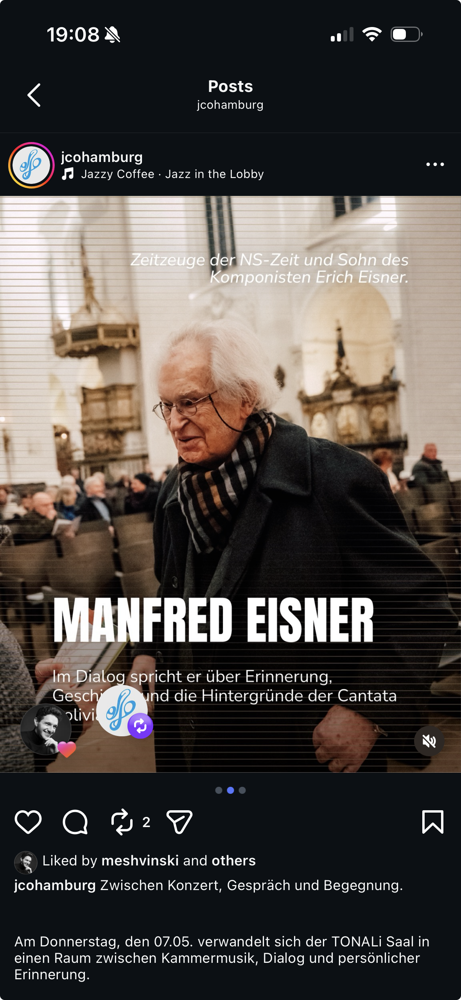

Bringing a traditional cultural institution closer to a younger audience — without losing depth or meaning.
Responsible for visual communication strategy and brand tone across Instagram. Working within existing CI to evolve the brand's digital presence.
Currently developing towards a more UGC-driven approach — thinking about how audiences create meaning, not just how institutions communicate.